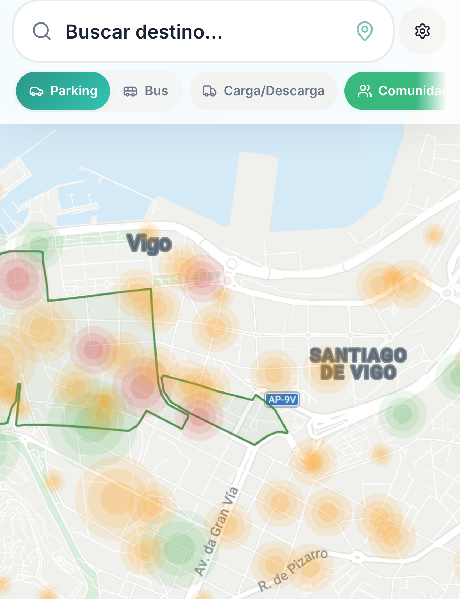

Mapa de aparcamiento
Dónde es más fácil aparcar en la calle.

Los círculos de colores marcan dónde es probable encontrar sitio en la calle. La línea verde es el contorno de la ZBE.
P
ParkCalm
parkcalm.com